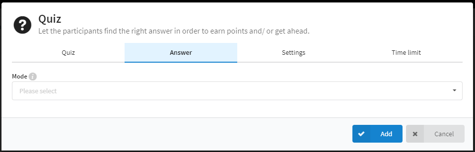

Hoe gebruik ik Actionbound? (quiz)
-
Quiz aanmaken stap 1
Hier kan u de vraag ingeven voor uw quiz. Onderaan kan u ook het aantal punten deze quiz zal geven als de deelnemer juist antwoord. -

Quiz aanmaken stap 2
Als u bovenaan op "Answer" klikt kan u het type antwoord op de vraag ingeven. Als u op de balk onder "Mode" klikt krijgt u 4 keuzes. Solution input, Multiple choice, Estimate number, Sort list. -
Quiz aanmaken stap 3
Solution input. Hier kan u een juist antwoord en een uitleg erbij geven. -
Quiz aanmaken stap 4
Multiple choice. Als u op "add" drukt kan u antwoorden toevoegen. Achter de antwoordbalk kan u dan aanduiden of dit antwoord juist of fout is. -
Quiz aanmaken stap 5
Estimate number. Hier kan u het juiste getal ingeven. Eronder kan u de minimum en maximum waarde aanduiden. Helemaal onderaan kan u ook aanduiden om de hoeveel de deelnemer ernaast was er 10% wordt afgetrokken. -
Quiz aanmaken stap 6
Sort list. Druk op "add" om antwoorden toe te voegen. De volgorde dat de antwoorden daar staan is de volgorde dat juist gerekend wordt. -
Quiz aanmaken stap 7
Als u bovenaan op "Settings" klikt kan u de instellingen van deze quiz aanpassen. U kan hier kiezen hoeveel keer iemand kan proberen deze quiz in te vullen. U kan hier kiezen hoeveel punten iemand verliest door een verkeerd antwoord. U kan ook hints toevoegen om mensen te helpen als ze verkeerd antwoorden. Als u wilt kan u ook het antwoord laten zien als de deelnemer verkeerd antwoordde. -
Quiz aanmaken stap 8
Als u bovenaan op "Time limit" klikt kan u een tijdslimiet op deze quiz zetten. U kan zeggen om de hoeveel tijd over het tijdslimiet er punten worden afgetrokken.